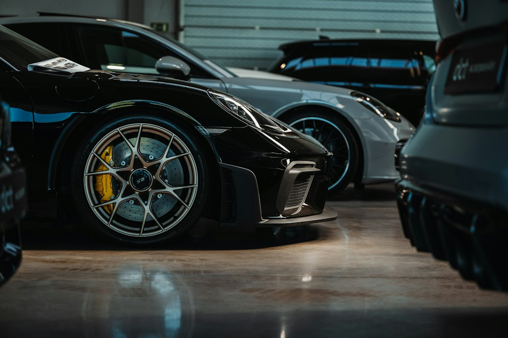

Come DriveMotion AI Rivoluziona la Promozione delle Auto Usate Eliminando gli Sfďondi Anti-Estetici nei Piazzali

DriveMotion AI: la soluzione definitiva per valorizzare gli annunci auto usate eliminando sfondi e piazzali poco attrattivi
- I piazzali con sfondi poco curati abbassano drasticamente l’appeal degli annunci online.
- Questa situazione riduce l’interesse degli utenti sui social e limita le conversioni di vendita.
- DriveMotion AI rimuove automaticamente lo sfondo e posiziona l’auto in ambientazioni di lusso con video narrati, migliorando il valore percepito e le performance di marketing.
Analisi approfondita del problema e delle implicazioni operative per il settore automotive
Nel mercato automotive, la presentazione visiva delle auto usate rappresenta un fattore cruciale per attrarre potenziali clienti, specialmente nei canali digitali. I concessionari e i saloni dell’usato frequentemente si trovano a dover fronteggiare un problema operativo legato alla qualità delle immagini e dei video che accompagnano gli annunci online e sui social media. Piazzali disordinati, sfondi poco curati o addirittura antiestetici compromettono la percezione del valore del veicolo, riflettendosi in un’attrattività molto ridotta.
Questa criticità non riguarda solo l’estetica ma ha ripercussioni dirette sulle metriche di business: tasso di click, tempo di visualizzazione, numero di contatti generati e infine conversioni in vendita. Spesso lo staff dei concessionari dedica tempo e risorse ingenti per organizzare servizi fotografici in location più curate o per editing manuali di immagini, con costi e tempi non sostenibili.
Le conseguenze e i costi di non intervenire su piazzali e sfondi poco attrattivi
Ignorare questo problema significa trovarsi continuamente in una condizione di svantaggio competitivo. Le auto usate presentate con sfondi banali o addirittura sporchi risultano meno appetibili online, specialmente quando sappiamo che la maggior parte degli utenti valuta in pochi secondi l’interesse per un annuncio. Questo si traduce in lead di qualità inferiore e tempi di giacenza del veicolo più lunghi nel magazzino.
I concessionari e i professionisti automotive rischiano così di incrementare i costi di marketing per ottenere risultati mediocri, aumentando la pressione commerciale sul team di vendita. Senza soluzioni efficaci, l’investimento pubblicitario in social media e portali online produce un ritorno che può risultare insoddisfacente, perché l’immagine veicolata non valorizza realmente il prodotto principale: l’auto.
Inoltre, il tempo perso in attività manuali di fotomontaggio o nella ricerca di location fotografiche idonee può ridurre l’efficienza operativa dell’intera filiera di vendita. Questo deficit crea un circolo vizioso, rallentando la capacità di risposta al mercato e al cambiamento delle tendenze digitali.
DriveMotion AI: la soluzione tecnologica che trasforma i tuoi annunci automotive
RM Studio ha sviluppato DriveMotion AI, un SaaS progettato specificamente per ridurre drasticamente le difficoltà operative legate alla gestione delle immagini e dei video promozionali nei saloni auto e concessionarie. Grazie all’intelligenza artificiale, DriveMotion AI rimuove automaticamente lo sfondo dei veicoli fotografati direttamente nel piazzale, sostituendolo con una delle dieci ambientazioni di lusso disponibili.
Questi sfondi digitali includono location ad alto impatto estetico e commerciale come showroom moderni, loft di design o scenari notturni futuristici (Notte Cyber) che esaltano forme, colori e dettagli dell’auto. Non solo immagini statiche: DriveMotion AI genera video promozionali HD con voce narrante che descrive in modo professionale e coinvolgente il veicolo, aumentando il potenziale di engagement sui canali digitali.
L’offerta Pay-As-You-Go permette ai professionisti automotive di acquistare video singoli a partire da €14.90, senza abbonamenti vincolanti e con grande flessibilità operativa. Questa modalità consente di sperimentare la potenza della tecnologia senza investimenti upfront elevati, con risultati immediatamente visibili e misurabili.
| Gestione Tradizionale | Con DriveMotion AI |
|---|---|
| Uso di immagini con piazzali disordinati o sfondi non ideali | Rimozione automatica dello sfondo e ambientazioni luxury adatte al brand |
| Editing manuale e servizi fotografici costosi e lunghi | Video promozionali HD generati automaticamente con narrazione professionale |
| Limitata attrattività e conversioni ridotte | Incremento dell’engagement e tasso di conversione grazie a contenuti digitali premium |
💡 Ti è stato utile questo approfondimento?
Condividilo con un collega o un amico del settore Concessionari Auto, Saloni Usato e Professionisti Automotive a cui potrebbe interessare!
FAQ: Domande frequenti su DriveMotion AI per i professionisti automotive
1. Quanto è semplice utilizzare DriveMotion AI per creare video promozionali di qualità?
DriveMotion AI è pensato per un utilizzo immediato e intuitivo: basta caricare l’immagine del veicolo e il sistema si occupa automaticamente di rimuovere lo sfondo, applicare l’ambientazione più adatta e generare il video narrato, riducendo tempi e costi.
2. Quali sono le ambientazioni previste e come influiscono sulle vendite?
Le dieci ambientazioni di lusso, come showroom eleganti, loft di design e scenari cyberpunk notturni, valorizzano il veicolo enfatizzandone qualità e appeal visivo, migliorando significativamente le performance degli annunci sulle piattaforme digitali.
3. È possibile integrare DriveMotion AI con le piattaforme social o di vendita online?
Sì, i video HD creati da DriveMotion AI sono ottimizzati per la condivisione su social media, siti web e portali di vendita auto, facilitando così le campagne di digital marketing senza necessità di ulteriori modifiche tecniche.
Inizia Subito
Pacchetti Pay-As-You-Go da €14.90 per video promozionali HD.
Fonti Ufficiali e Risorse Esterne
Scopri l'Intelligenza Artificiale per la tua attività
Ottimizza i processi e aumenta le vendite con le soluzioni B2B di RM Studio.
Scopri DriveMotion AI